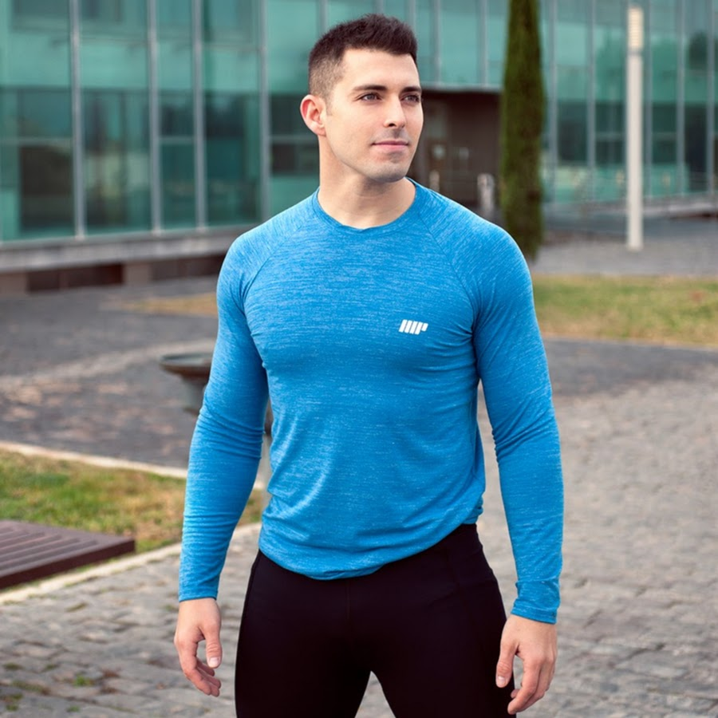
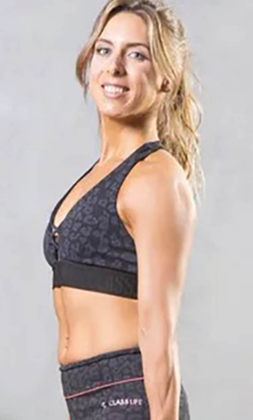

Sergio es un personal trainer altamente capacitado y motivado, con años de experiencia en la industria del fitness. Su enfoque personalizado para cada cliente lo ha convertido en uno de los entrenadores más populares en su área. Sergio es conocido por su ética de trabajo implacable y su enfoque en la técnica y la forma adecuada para maximizar los resultados de sus clientes. Además de su experiencia en entrenamiento de fuerza y acondicionamiento físico, también tiene una amplia experiencia en nutrición y bienestar general. Sergio es un apasionado de ayudar a sus clientes a alcanzar sus objetivos de fitness y vivir un estilo de vida saludable y activo.

Romina es una personal trainer dedicada y entusiasta que se especializa en entrenamiento funcional y de resistencia. Con su amplia experiencia y conocimiento en el campo del fitness, Romina ha ayudado a muchas personas a alcanzar sus objetivos de pérdida de peso, fortalecimiento muscular y mejora de la salud en general. Su enfoque personalizado y su habilidad para motivar a sus clientes a superar sus límites son altamente valorados por sus clientes. Romina es una defensora apasionada de la nutrición adecuada y la importancia de un estilo de vida saludable, lo que la convierte en un modelo a seguir para muchos de sus clientes. Su compromiso con el éxito de sus clientes es evidente en cada sesión de entrenamiento, donde ella trabaja duro para ayudar a sus clientes a alcanzar sus objetivos de fitness de manera segura y efectiva.